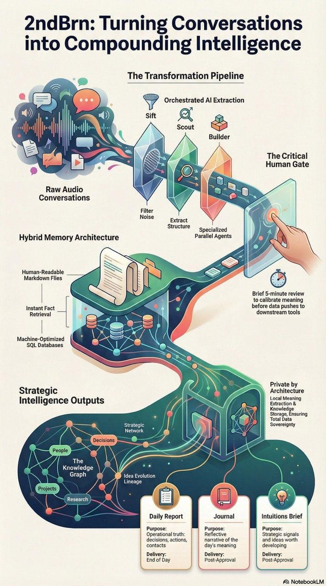

Transcript-First
Designed around structured transcript input and extraction, not disposable chat context.
Public Architecture Preview
2ndBrn.ai is a transcript-first, privacy-first reference architecture for extracting decisions, tasks, ideas, and context into durable knowledge with a human calibration gate.

Designed around structured transcript input and extraction, not disposable chat context.
High-impact outputs pass through human review before downstream actions are triggered.
Public materials contain architecture and specs only—no private transcripts, secrets, or production internals.
These documents define the public system shape, privacy boundary, and explicit non-goals.
We are publishing a clean reference architecture first, then iterating toward a minimal reference scaffold.
Explore repository